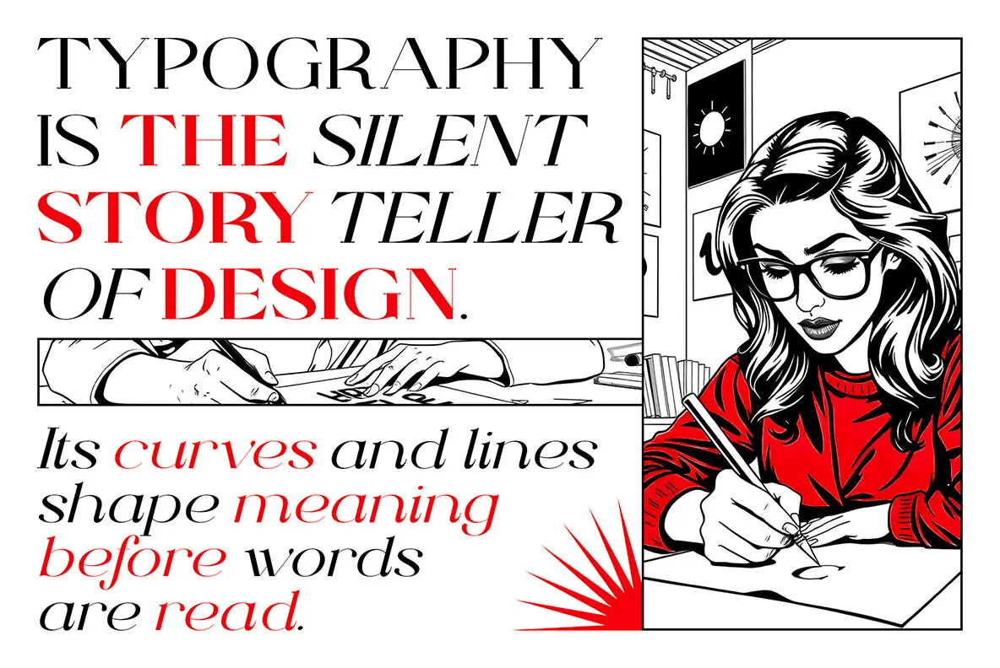

The source pairs a left editorial column and hands strip with a full-height framed artist portrait.
An illustrated editorial spread with a four-line headline and working-hands detail.

The source pairs a left editorial column and hands strip with a full-height framed artist portrait.